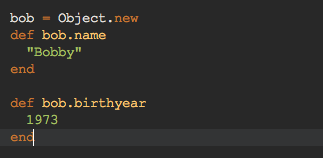
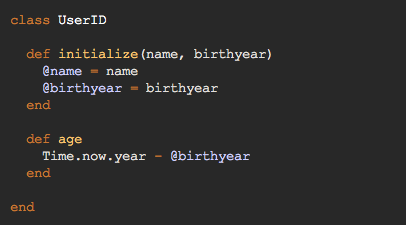
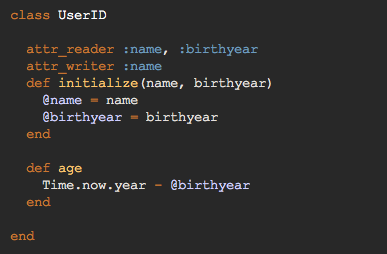

Bob is a person. His name is bob. He was born in 1973. That's just a couple things we know about him. We know he has a name and a birthyear. Bob is a person, but this information could be found on his Driver ID. Suppose we wanted to model Bob in a ruby program. To do so we might consider creating a Ruby object -- that is, something has holds a state or set of states, and that can respond to a question (or message) -- in other words, we can ask things about an object, and given that we ask it the right question, it can give us an answer. Consider the object bob:
Bob is a new object that we've created. We've also created some behaviors for bob that will give him what he needs to be able to tell us his name and his age back to us. We ask bob what his name is with the command bob.age and we ask him what his birthyear is with bob.birthyear
Bob can also tell us things about himself that he might not have immediate access to through a mere variable that spouts out a static answer. Bob, when endowed with the write methods, can dynamically produce the answer to a query. For example, let's ask bob what his age is. For bob to be able to respond to this message, we need to give him the ability to tell us what his age is based what what the year *currently* is. We might model this method with the following code:
def ageTime.now.year - self.ageend
Whenever we ask bob how old he is, he responds by first asking what year it currently is (Time is actually a class in ruby!) and then subtracting his own birthyear from the current one. To do so, bob actually asks himself how old he is (using self.age). Self is a cool command in which an object can recieve information about itself when it needs to. Just make sure that when you use self, that self knows how to respond to the mesage it is asking itself! The tongue, it twists.
Bob has friends, it turns out, and they all have ID's as well. Suppose we want to store that information, but we want to collect it in a way that doesn't force us to create a ton of redundant and repetetive methods for each individual ID. We know that Bob and his friends, Amy, Joel, Susan, and Chynna all have specific names and birthyears. We also know that they should be able to tell us how old they are, should we ask them. How can we create a model for these traits and behaviors without having to manually create 4 new objects? The answer is in classes.
A class is an object creator. We can create an object through a class once we give it the most basic information it needs (what we call the initialization states of an object). When we provide a class with information, it will generate a new object, endowed with the methods we assign the class we create. Enough talking, let's take a look at what a class would look like with the information we want.
Take a look at the @name and @birthyear notation. These are what we call instance variables. Rather than write methods that tell us exactly what those things are, we instead demand that such information be provided prior to creating the object. Because these states with onl represent the state of the current object we are creating, we consider these variable to represent specific *instances* of the class model, hence, instance variables. Let's create our four new friends, right now.
amy = UserID.new("amy love", 1955)joel = UserID.new("joel childress", 1990)susan = UserID.new("susan moo", 2003)chynna = UserID.new("chynna cymmbale", 1937)In four lines, we have four new objects, four new friends. Notice how all of these people will be able to tell us their age, immediately. All of them have been endowed with that method. It should be noted, however, that we cannot currently ask them for their name or birthyear -- this is because that, though these people contain such information, we have no way of actually reading those individual facts from them, or states. What we need to do is put what we cann an attribute reader for the UserID class -- this allows us to ask each object what it's specific attributes are.
In addition, what if we consider the possibility that one of these people might end up getting a name change? Changing your birthyear we know is not possible, but by all means, we shouldn't be so cruel as to neglect these citizens an opportunity to have a different name. To allow an object to change information about itself, we must be able to overwrite the objects state -- we do so by using a tool called an attribute writer.
In the following class, we show that, should we ask for a persons name, they can respond to that request, and should we desire to rename one of our friends, they will oblige.
Now we have the ability to read both states of each object, as well as redefine each object's name, should we choose to. This introduction to attribute readers and writers, as well as classes and objects, is a pretty minimal and basic overview, but hopefully it serves as a good introduction to not only why we would create objects, but why we would create a model for a specific type of object in the first place. Objects ultimately makeup the fundamental nature of the Ruby programming language, so it's best to embrace objects early, and become their friends, just as we became friends with our little Bobject today.
Back to Top